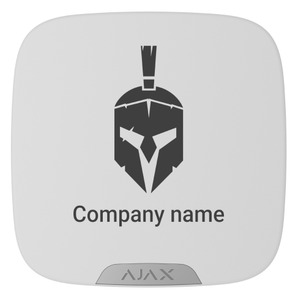
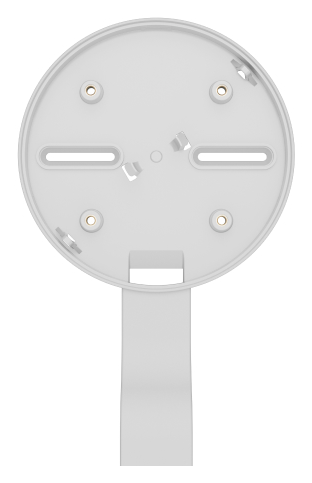

Type4 Internal Battery (24h)
Accessoires
Réf. fabricant IB.T424.Y · Ajax Systems, marque partenaire
Sur devisÉtude, fourniture et installation par Active Sécurité 974
Batterie Li-ion rechargeable (7,4 V/5 Ah) à installer dans Type4 Fire Hub Jeweller ou Type4 Fire ReX Jeweller
Autres versions officielles de la même famille (optique, format, Jeweller ou Fibra, alimentation). Le coloris choisi est repris sur la fiche suivante.
- Étude et devis gratuits, sans engagement
- Installation chez vous, partout à La Réunion
- Partenaire agréé Ajax Systems
Caractéristiques
En bref.
- 5Ah pour 24 heures de fonctionnement
- 24 heures5 Ah pour
Source : Ajax Systems
Fiche technique
| Modèle | Type4 Internal Battery (24h) |
|---|---|
| Référence fabricant | IB.T424.Y |
| Gamme | Type4 Line |
| Type | Accessoires |
| Points clés |
|
| Coloris officiels | Noir, Blanc |
| Prix | Sur devis |
| Disponibilité | Précisée dans le devis |
Dans la même famille
Autres produits.
![Bypass (Dimmer) [55]](../assets/img/p/bypass-dimmer-55-212.webp)
Bypass (Dimmer) [55]
Accessoires
- 8 VRaccordement des ampoules à moins de
Source : Ajax Systems
Sur devisVoir la fiche


EN54 Internal Battery (24h)
Accessoires
- 5Ah pour 24 heures de fonctionnement
- 24 heures5 Ah pour
Source : Ajax Systems
Sur devisVoir la fiche
EN54 Internal Battery (72h)
Accessoires
- 5Ah pour 24 heures de fonctionnement
- 24 heures5 Ah pour
Source : Ajax Systems
Sur devisVoir la fiche

ExternalAntenna
Accessoires
- 3 mSurmonte tous les obstacles au signal grâce à un câble de
- Jusqu'à 3 mconnexion filaire
Source : Ajax Systems
Sur devisVoir la fiche

GlandBox
Accessoires
- 16lieux d'installation des presse-étoupes
- IP20Boîtier
Source : Ajax Systems
Sur devisVoir la fiche